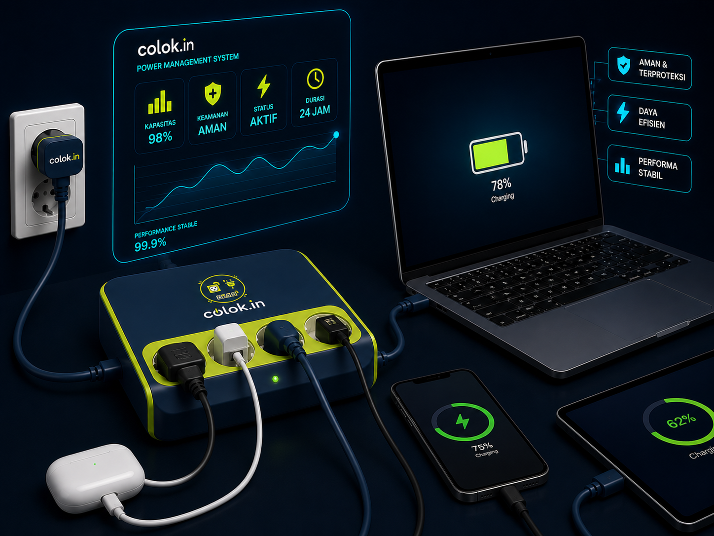
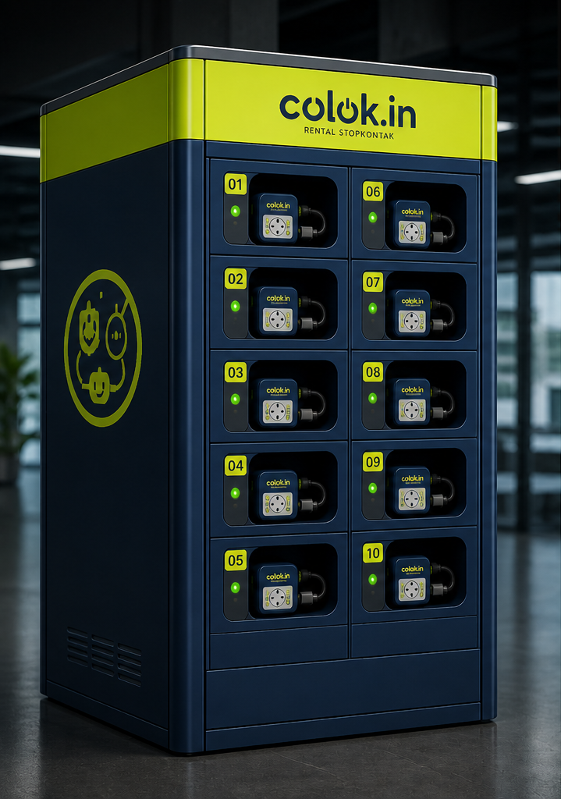

Daya Presisi
Di Mana Pun Anda Berada.
Colok.in adalah sistem informasi generasi berikutnya untuk mobilitas perkotaan. Sewa pemanjang daya berkapasitas tinggi dari loker aman kami dan jaga produktivitas Anda tetap mengalir tanpa gangguan.

Keunggulan Colok.in
Dirancang untuk profesional modern yang menuntut keandalan dan kecepatan.
Hemat Waktu
Akses instan melalui pemindaian QR. Tanpa menunggu, tanpa hambatan pendaftaran, hanya daya murni dalam hitungan detik.
Aman
Transaksi terenkripsi dan perlindungan loker fisik kelas militer untuk setiap unit.
Menguntungkan
Dapatkan PowerPoints untuk setiap siklus penyewaan.
Infrastruktur Andal
Loker kami tersebar di pusat-pusat utama kota, memastikan Anda tidak pernah lebih dari 5 menit dari pengisian daya. Sel berkapasitas tinggi memastikan pemulihan baterai penuh dalam waktu singkat.

Keunggulan Perangkat Keras
Dibangun dengan sel lithium densitas tinggi dan dukungan pengisian cepat multi-protokol (USB-C PD, QC 4.0). Perangkat keras kami diuji untuk menahan kerasnya kehidupan perkotaan.
- check_circle Sel Perusahaan 20.000mAh
- check_circle Casing Industri Tahan Panas
- check_circle Teknologi Tegangan Cerdas Adaptif
Siap untuk Mengisi Daya?
Bergabunglah dengan 50.000+ profesional perkotaan yang tidak pernah khawatir tentang tingkat baterai mereka. Temukan hub Colok.in terdekat hari ini.